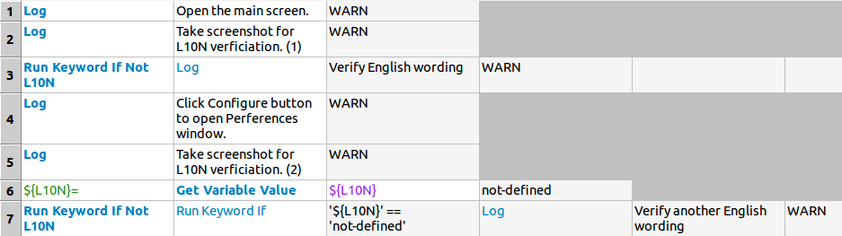

首先用一個例子來說明為什麼會有自訂 Run Keyword If XXX 的需求。假設產品測試人員用下面的 test case 在英文環境下測試某些 wording：
| *Test Case* | *Action* | *Argument* | *Argument*
| Test | Log | Open the main screen. | WARN
| | Log | Verify English wording | WARN
| | Log | Click Configure button to open Perferences window. | WARN
| | Log | Verify another English wording | WARN之後 L10N team 會做一點加工：
| *Test Case* | *Action* | *Argument* | *Argument*
| Test | Log | Open the main screen. | WARN
| | Log | Take screenshot for L10N verficiation. | WARN  | | Log | Verify English wording | WARN
| | Log | Click Configure button to open Perferences window. | WARN
| | Log | Take screenshot for L10N verficiation. | WARN
| | Log | Verify another English wording | WARN
| | Log | Verify English wording | WARN
| | Log | Click Configure button to open Perferences window. | WARN
| | Log | Take screenshot for L10N verficiation. | WARN
| | Log | Verify another English wording | WARN| 在適當的地方安插畫面截圖的動作，事後能以人工的方式快速校閱翻譯的結果。 |
但這個加工後的 test case 無法在非英文的環境下通過測試，因為 "Verify another English wording" 的動作一定失敗。
為了讓 L10N team 可以直接延用產品測試人員所寫的 test case，必須設計一個機制使能夠在進行 L10N 測試時略過某些檢查，但又不影響原有的功能測試。
examples/runkw/test.txt| *Setting* | *Value*
| Library | L10NLibrary.py
| *Test Case* | *Action* | *Argument* | *Argument*
| Test | Log | Open the main screen. | WARN
| | Log | Take screenshot for L10N verficiation. (1) | WARN
| | Run Keyword If Not L10N | Log | Verify English wording | WARN
| | Log | Click Configure button to open Perferences window. | WARN
| | Log | Take screenshot for L10N verficiation. (2) | WARN
| | ${L10N}= | Get Variable Value | ${L10N} | not-defined
| | Run Keyword If | '${L10N}' == 'not-defined' | Log | Verify another English wording | WARN 
Run Keyword If Not L10N 應運而生，這一行在做 L10N 測試時沒有作用。
| |
這裡示範了如果沒有 Run Keyword If Not L10N，自己用 Run Keyword If 判斷會有點小麻煩。
|
當然我們也可以規劃另一個 Run Keyword If L10N 來控制某些步驟只有在做 L10N 測試時才會有作用；但就這個例子而言，用 Take Screenshot If L10N 會比較洽當。
examples/runkw/L10NLibrary.pyfrom robot.libraries.BuiltIn import BuiltIn
_builtin = BuiltIn()
class L10NLibrary:
def run_keyword_if_not_l10n(self, name, *args):
l10n = _builtin.get_variable_value('${L10N}')
if l10n is None: _builtin.run_keyword(name, *args)
用 L10N 這個變數來控制 L10N 測試時所關注的語言。
|
測試結果：
$ pybot test.txt
==============================================================================
Test
==============================================================================
[ WARN ] Open the main screen.
[ WARN ] Take screenshot for L10N verficiation. (1)
[ WARN ] Verify English wording
[ WARN ] Click Configure button to open Perferences window.
[ WARN ] Take screenshot for L10N verficiation. (2)
[ WARN ] Verify another English wording
Test | PASS |
...
$ pybot --variable L10N:zh-tw test.txt
==============================================================================
Test
==============================================================================
[ WARN ] Open the main screen.
[ WARN ] Take screenshot for L10N verficiation. (1)
[ WARN ] Click Configure button to open Perferences window.
[ WARN ] Take screenshot for L10N verficiation. (2)
Test | PASS |就算是將最後一個步驟硬再套上一層 Run Keyword If Not L10N 也沒問題。在 RIDE 下，highlight 也能正常地顯示：

最後，官方文件提到如果有用到 BuiltIn.run_keyword() 的話，必須要額外做註冊的動作。
The only catch with using methods from BuiltIn is that all run_keyword method variants must be handled specially. Methods that use run_keyword methods have to be registered as run keywords themselves using register_run_keyword method in BuiltIn module. This method’s documentation explains why this needs to be done and obviously also how to do it.
— Robot Framework User Guide
而 register_run_keyword() 是這麼寫的：
BuiltIn.pydef register_run_keyword(library, keyword, args_to_process=None):
"""Registers 'run keyword' so that its arguments can be handled correctly.
1) Why is this method needed
Keywords running other keywords internally (normally using `Run Keyword`
or some variants of it in BuiltIn) must have the arguments meant to the
internally executed keyword handled specially to prevent processing them
twice. This is done ONLY for keywords registered using this method.
If the register keyword has same name as any keyword from Robot Framework
standard libraries, it can be used without getting warnings. Normally
there is a warning in such cases unless the keyword is used in long
format (e.g. MyLib.Keyword).
Starting from Robot Framework 2.5.2, keywords executed by registered run
keywords can be tested with dryrun runmode with following limitations:
- Registered keyword must have 'name' argument which takes keyword's name or
Registered keyword must have '*names' argument which takes keywords' names
- Keyword name does not contain variables
...
for name in [attr for attr in dir(_RunKeyword) if not attr.startswith('_')]:
register_run_keyword('BuiltIn', getattr(_RunKeyword, name)) | 包括 BuiltIn Library 也會將自己的 run keywords 做註冊的動作。 |
就這個例子而言，沒有做註冊的動作也沒問題，不過還是照規定來好了：
examples/runkw/L10NLibrary.pyfrom robot.libraries.BuiltIn import BuiltIn, register_run_keyword
_builtin = BuiltIn()
class L10NLibrary:
def run_keyword_if_not_l10n(self, name, *args):
l10n = _builtin.get_variable_value('${L10N}')
if l10n is None: _builtin.run_keyword(name, *args)
register_run_keyword('L10NLibrary', L10NLibrary.run_keyword_if_not_l10n)